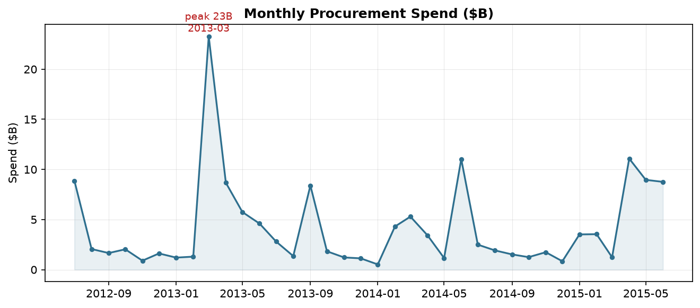
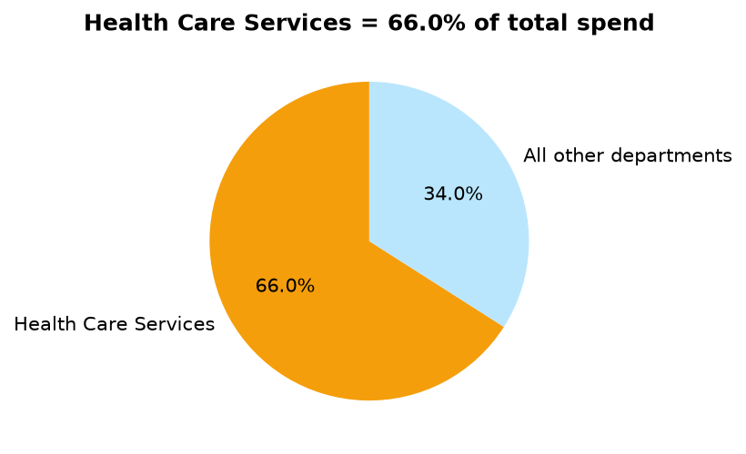
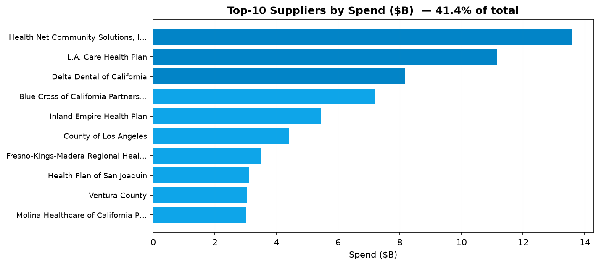
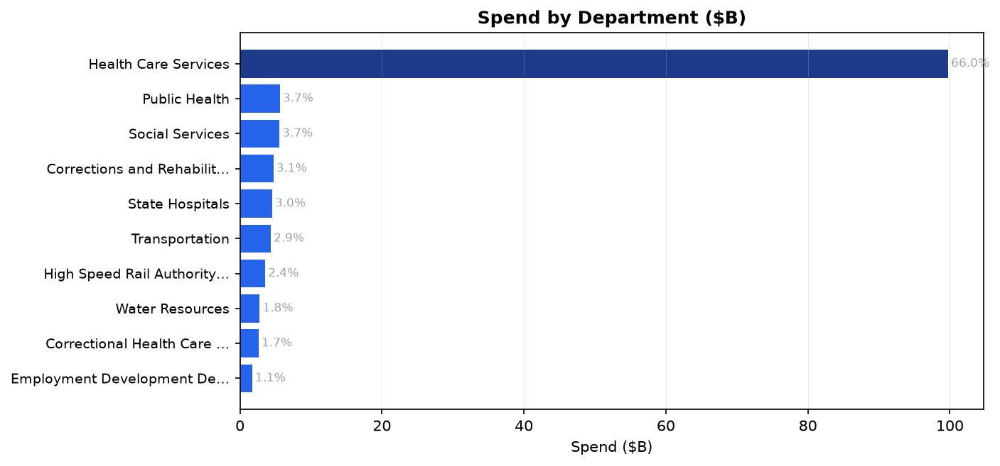
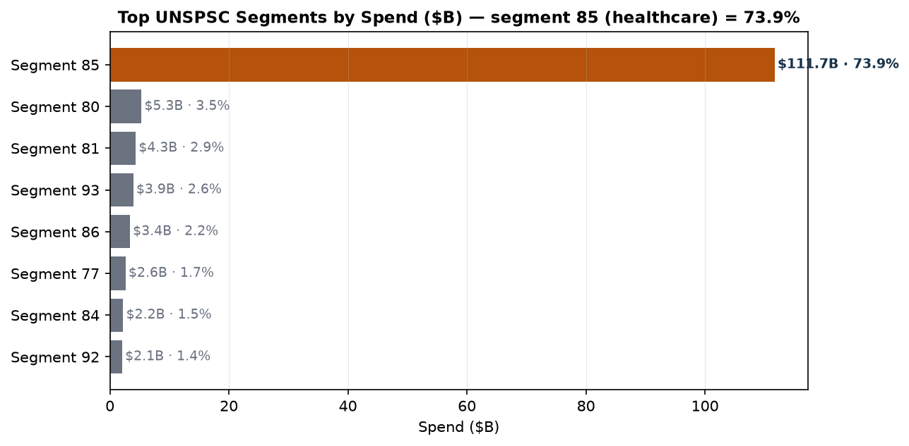
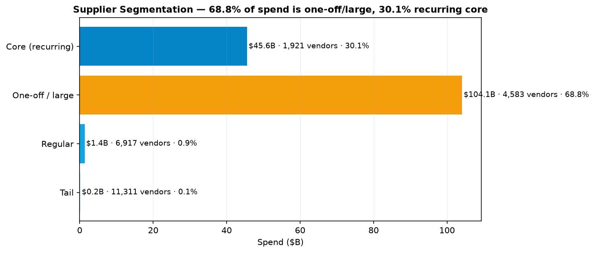
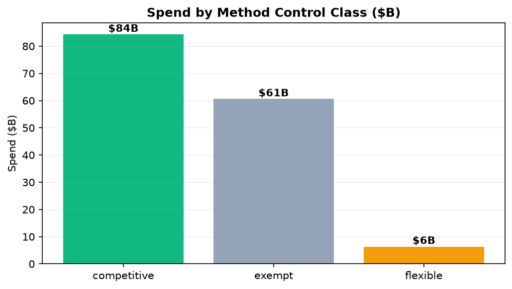
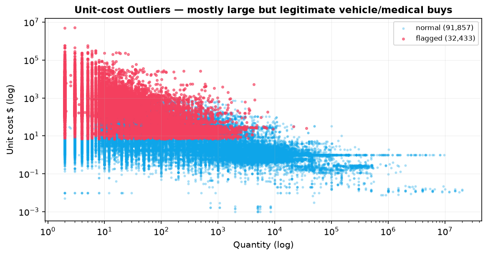

A 346k-record analysis of state purchase orders to find where money concentrates, which buys are uncontrolled, and what to do about it — turning raw procurement data into an actionable cost & compliance plan.
The State of California runs procurement for 200,533 purchase orders across 24,732 suppliers. Procurement teams routinely cannot see three things that drive cost and risk:
One-sentence goal: identify the small number of high-impact levers (concentration, control, and reviewable purchases) that let procurement negotiate better, set controls, and protect taxpayer money.
The raw CSV had ~909k physical lines but only 346,018 logical records: many text fields (item name, description) span multiple lines, so naive row reads over-count. Key steps (scripts/clean_data.py):
| Issue | Treatment | Impact |
|---|---|---|
| Physical vs logical rows | Read full rows; multi-line text fields belong to one record | 909k lines → 346,018 clean records, 0 rows lost |
Money as $1,234.56 strings | Strip $/commas, parse to float | Unit & total price usable for math |
Dates as MM/DD/YYYY text | Parse to datetime, derive month/fiscal-year | Time trends + FY year-end peaks visible |
Location dirty field "ZIP\n(lat,lon)" | Keep only 5-digit ZIP | 262,270 lines with clean ZIP |
| UNSPSC code | Keep first 2 digits as product segment | Category roll-ups possible |
| Acquisition method | Map to control class: competitive / exempt / flexible | Identifies uncontrolled spend |
No rows were dropped for cleaning; the 909k→346k difference is a reading artifact, not data loss.
| Metric | Formula / definition | Why it matters |
|---|---|---|
| Total spend | Σ total_price over all lines | Scale of the program |
| Top-10 share | Σ top-10 suppliers ÷ total | How concentrated purchasing is |
| HHI | Σ (supplier_share)² | Standard concentration index (0–1) |
| Method control class | competitive / exempt / flexible | Share of spend outside standard channels |
| Flexible-method spend | Σ spend on SOQ, NCB, Emergency, etc. | Reviewable / higher-risk purchasing |
| Unit-cost anomaly | MAD-based deviation from segment median | Lines whose unit price is far from peers |
Principle. KMeans groups suppliers into clusters so that suppliers inside a cluster are similar and clusters are as different as possible, by scaling 5 features: total spend, order count, category breadth, max-line share, and average line value.
Why (business-driven). Negotiation effort is scarce. The question is "which suppliers deserve a strategic relationship?" — a cost problem, not a statistics exercise. A simple threshold on spend alone would miss one-off giants vs. steady core vendors.
How. Features standardized (StandardScaler), k=3 (chosen by business sense: core / regular / one-off), n_init=10 for stability, random seed fixed.
| Tier | Suppliers | Spend | Share | Action |
|---|---|---|---|---|
| Core (strategic) | 8 | $53.5B | 35.4% | Negotiate consolidated contracts |
| Regular | 10,666 | $84.3B | 55.7% | Policy + catalog compliance |
| One-off | 14,058 | $13.4B | 8.9% | Consolidate; watch tail |
The 8 core vendors are all healthcare-payer organizations (Health Net, L.A. Care, Delta Dental, Blue Cross, IEHP, Fresno-Kings-Madera, and partners) — concentration is fundamentally a healthcare-payer phenomenon.
Principle. The Median Absolute Deviation (MAD) measures how far values spread around the median, robustly (unlike mean ± σ, it is not distorted by the outliers it is trying to find). A line is flagged when its unit cost is >3×MAD above its segment median.
Why. After a first pass, we deliberately did not use total-spend anomaly detection: that flagged huge but legitimate medical contracts (83% of spend) — meaningless. We restrict to goods lines with quantity ≥ 2 (comparable unit prices) and compare within a product segment, to avoid "comparing helicopters to patrol cars".
How & honest caveat. 32,433 goods lines (of 124,290 comparable) are flagged, ~$731.7M. But inspection shows the top flags are legitimate big buys (helicopters, police interceptors, fire apparatus). Conclusion: with no SKU-level or market-price baseline, statistical unit-price flags are unreliable; we treat them as a review queue, not a verdict.
Purchases made through flexible / non-standard methods are grouped into a process-review list: $6.36B across 76,129 lines (Statement of Qualifications $1.73B, NCB $1.30B, State Programs $0.95B, Emergency $0.59B, Fair & Reasonable $0.42B, …). These are not presumed bad — they are the subset a reviewer should sample for process compliance.








35.4% of spend sits with 8 healthcare-payer suppliers. Run consolidated contract negotiations and volume rebates. Even a modest 2–3% price bring-down on the core tier = $1.0–1.6B annual leverage.
Sample SOQ / NCB / Emergency / Fair & Reasonable lines for process compliance. Flexible methods are legitimate but higher-risk; a sampling regime (e.g. top-200 by spend) catches off-contract drift without choking operations.
Raise the share of spend through competitive / framework channels; track a monthly "spend under management" KPI alongside the fiscal-year-end peaks to dampen year-end buying spikes.
Keep the 32k-flag goods list as a weekly review queue with human sign-off — with a SKU-level or market-price baseline added later, it becomes a real overpricing detector rather than a screen.
Deliverables in repo: cleaned table (output/procurement_clean.parquet), anomaly / flexible / segmentation outputs, charts (assets/), and this report.